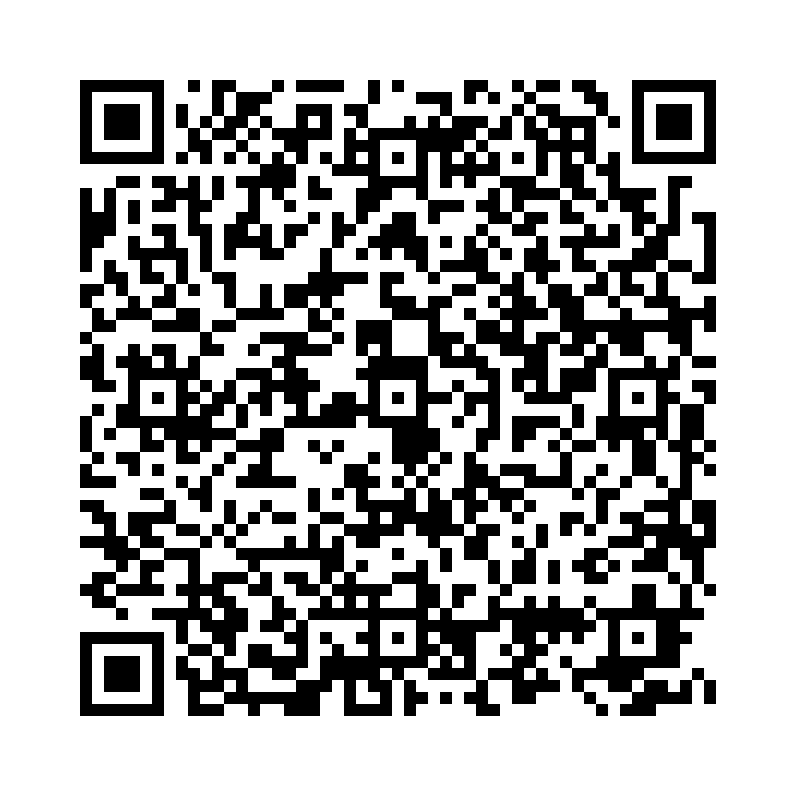

that節 は「〜ということ」と文の一部を補足する役割があります。 主語や目的語、補語として使われます。
例: I think that he is honest.（私は彼が正直だと思います。）
短縮形: that節内でも "he is" → "he's" のような短縮は可能ですが、形式的な文章では避けられることがあります。
以下の単語を並び替えて正しい文を作成しましょう。（和訳を参考にしてください）

問題1: (that / honest / is / he / think / I) - 私は彼が正直だと思います。
解答: I think that he is honest。
解説: 接続詞 "that" を使って文と文をつなぎます。
問題2: (know / don't / that / you / if / I / that) - あなたがそれを知っているかどうか分かりません。
解答: I don't know that if you know that。
解説: 接続詞 "that" を使って文と文をつなぎます。
問題3: (we / is / are / that / worried / she / late) - 彼女は私たちが遅れることを心配しています。
解答: She is worried that we are late。
解説: 接続詞 "that" を使って文と文をつなぎます。
問題4: (know / he / we / is / that / a / teacher) - 私たちは彼が先生だと知っています。
解答: We know that he is a teacher。
解説: 接続詞 "that" を使って文と文をつなぎます。
問題5: (think / don't / I / wrong / that / he / is) - 私は彼が間違っているとは思いません。
解答: I don't think that he is wrong。
解説: 接続詞 "that" を使って文と文をつなぎます。